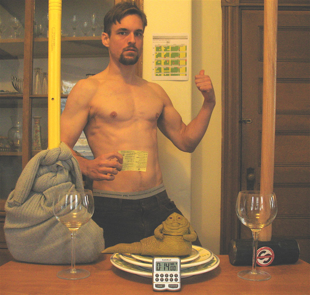
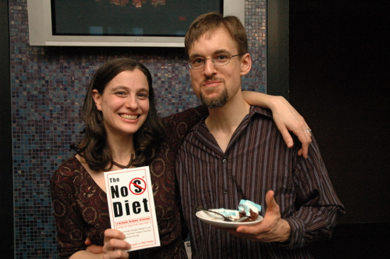
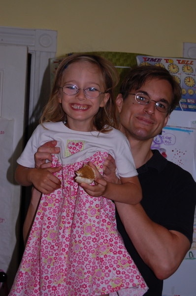
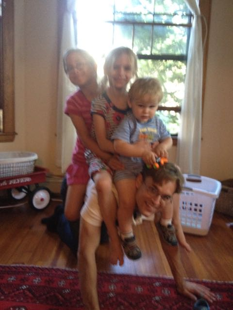

No S Diet: The Obligatory Before and After
"After" is a myth. It's "before" and "during." "After" is when you're dead.
I'm aware that this is not the most striking transformation ever seen. You'd rather see someone stepping out of pant legs that could now accommodate his whole torso (if you've done the No S Diet and fit this description, I want your photo!). But it's real, and lasting, and replicable.
| 2002 before (~210 pounds) | 2004 "during" (~170 pounds) |
I've got a much funnier "before" shot lying around somewhere but I haven't been able to find it after hours of searching. Some day...
The 2004 "during" shot is fraught with all kinds of old master type symbolism. Well, not quite, but devotees of the bulletin board will notice token items representing favorite concerns.
For those just wandering in from some random place on the internet and ill equipped to appreciate the above, the tricked out sledgehammer I'm holding in my right hand is a shovelglove. The feet I've managed to cut off in both shots (incompetence, not symbolism) belong to an urban ranger.
I'm not kidding about the "during." I'll have another shot for you in 2005. And 2006, 2007... (keep scrolling)
Unless/until mentioned otherwise, I am ~170 pounds in all the durings.
2005 "during"
2006 "during"

2007 "during"

I am gradually going to start to look older. This is not a result of the diet. :-)
2008 "durings"

Bonus 2008 "during"
2009 "during"
2010 "during"

2011 "durings" (posted way late so you get two)
|  |
2014 "during"
Missed a couple years posting but I'm still at it!

2016 "during"
Bi-ennially seems to be about what I can manage these days...

© 2001-2016 Everyday Systems LLC, All Rights Reserved.